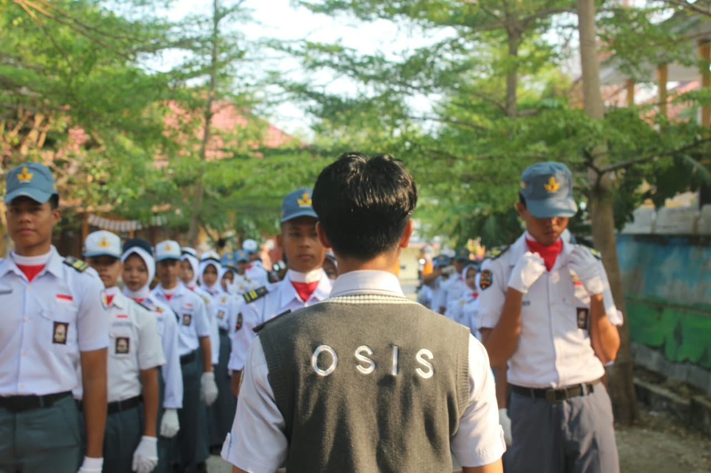

Disiplin, tanggung jawab, dan cinta tanah air.

Paskibra adalah Pasukan Pengibar Bendera yang bertugas mengibarkan dan menurunkan bendera Merah Putih.
Mengirimkan perwakilan siswa terbaik untuk mengikuti seleksi Paskibraka.
Latihan baris-berbaris dan kedisiplinan.
Persiapan upacara bendera.
Kegiatan sosial dan kepemimpinan.